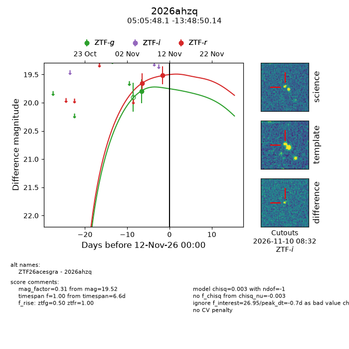
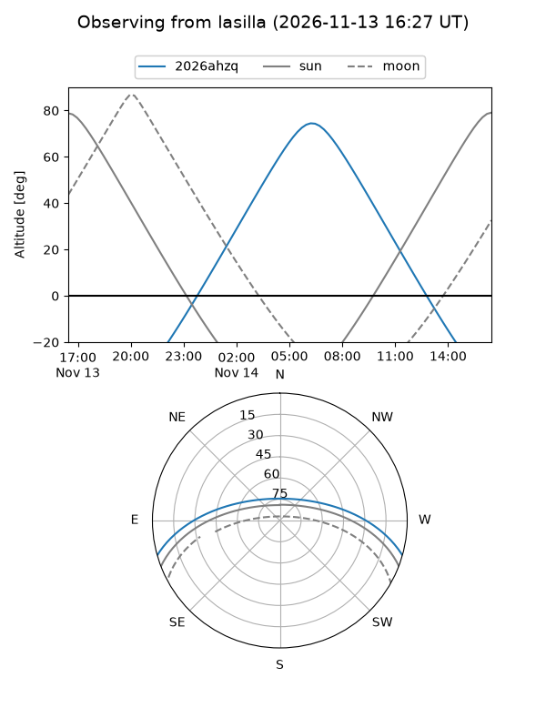
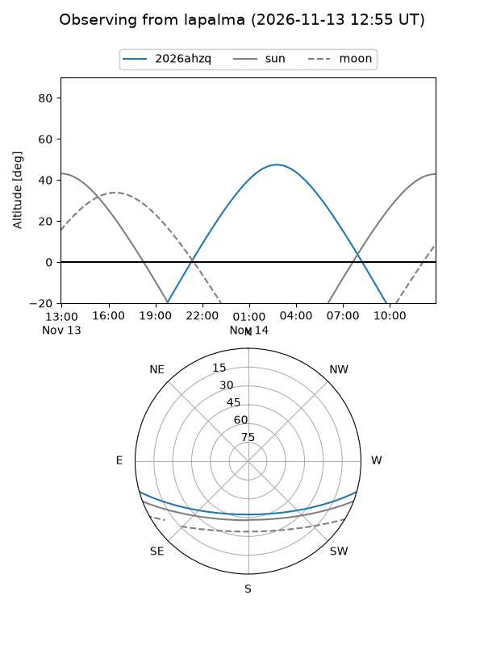
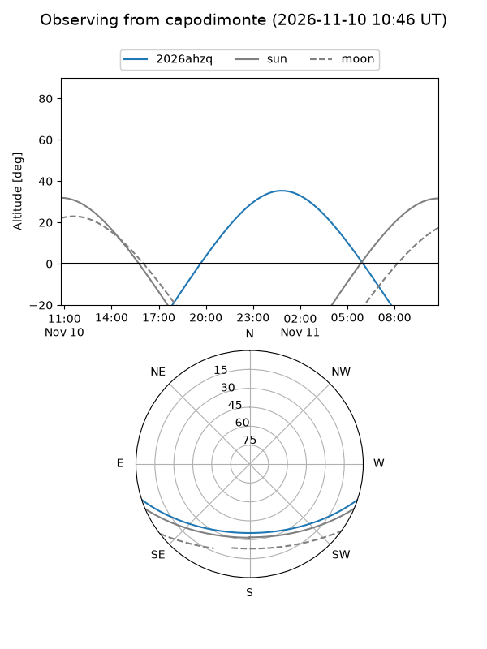
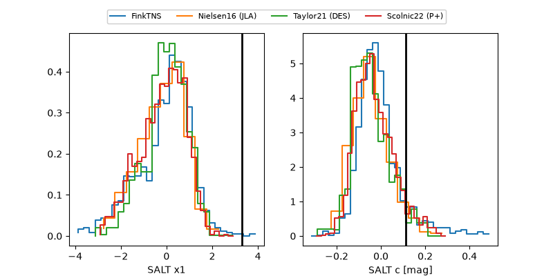

2026ahzq
Target 2026ahzq at 2026-11-12 00:02
Aliases and brokers:
FINK-ZTF: ztf.fink-portal.org/ZTF26acesgra
Lasair-ZTF: lasair-ztf.lsst.ac.uk/objects/ZTF26acesgra
ALeRCE-ZTF: alerce.online/object/ZTF26acesgra
YSE-PZ: ziggy.ucolick.org/yse/transient_detail/2026ahzq
TNS name: wis-tns.org/object/2026ahzq
Direct TNS query: direct search
alt names
ZTF26acesgra (ztf,fink_ztf)
2026ahzq (tns,yse)
Coordinates:
equatorial (ra, dec) = 76.4505,-13.81393
equatorial (HMS+DMS) = 05:05:48.12,-13:48:50.14
galactic (l, b) = (213.9567,-29.55576)
Flags:
peak dt: -0.7
Photometry:
last ztfg=19.79, ztfr=19.52
1 ztfg, 2 ztfr detections
Lightcurve

Visibility



Additional plots
